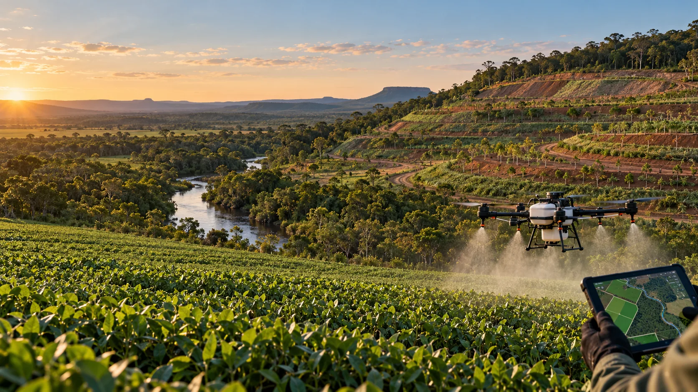
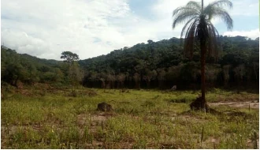
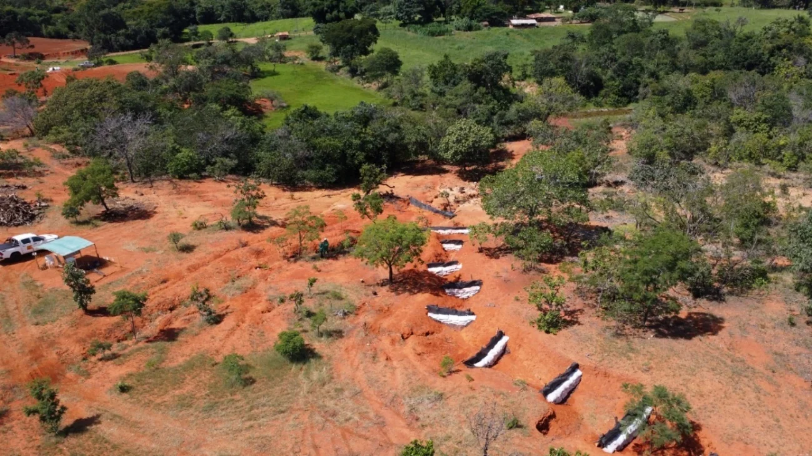
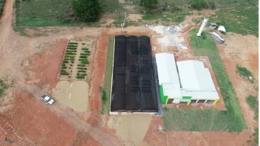

Do planejamento
à execução no campo.
Recuperação ambiental, licenciamento, drones agrícolas e irrigação. Soluções para mineração, empresas e propriedades rurais.
Qual é a sua necessidade?
Recuperação ambiental
PRAD, revegetação, restauração florestal e controle de erosão para áreas degradadas e mineração.
Conhecer serviço 02Licenciamento e gestão
MCE, PCA, PGRS, condicionantes, supervisão e monitoramento ambiental.
Conhecer serviço 03Drones agrícolas
Aplicações de defensivos e fertilizantes, distribuição de sementes e manejo de pastagens.
Conhecer serviço 04Irrigação, solo e água
Projetos e implantação de irrigação, automação e apoio ao manejo de solo e recursos hídricos.
Conhecer serviçoTambém atuamos com inventário florestal, mapas, viveiros, recursos hídricos e monitoramento. Explore as especialidades.

Seu campo.
Nossa próxima operação.
Conte onde fica a área, o tipo de aplicação e a janela de trabalho. A Ordone avalia a operação e organiza uma proposta adequada à sua demanda.
- Aplicação de defensivos e fertilizantes
- Distribuição de sementes
- Manejo e recuperação de pastagens
Trabalhos que mostram o processo.

ACERVO PROFISSIONALRevegetação e recuperação ambiental
Registros de implantação e evolução da vegetação.

ACERVO PROFISSIONALSolo protegido, erosão controlada
Bioengenharia e acompanhamento de intervenções.

ACERVO PROFISSIONALViveiros e recursos hídricos
Estruturação de áreas para produção de mudas.
Experiências anteriores do responsável técnico são identificadas como acervo profissional em cada caso.
Um próximo passo claro.
- 01
Conte sua demanda
Envie município, objetivo, prazo e os documentos que já possui.
- 02
Definimos o escopo
Avaliamos dados, necessidade de visita, equipe e entregáveis.
- 03
Receba a proposta
Alinhamos orçamento, cronograma e condições para iniciar.
O que sua área
precisa hoje?
Fale com a Ordone e organize o primeiro passo.
Engenheiro Agrônomo
Diretor técnico · CREA 18776/D-DF